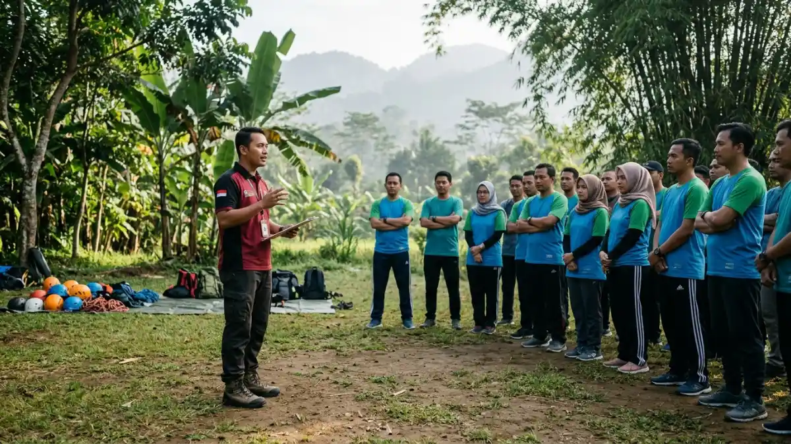

Peserta kegiatan outbound di kawasan Pacet Mojokerto kompak memindahkan bola menggunakan jalinan tali dalam permainan team building di lapangan terbuka hijau. (Ilustrasi)
Peserta kegiatan outbound di kawasan Pacet Mojokerto kompak memindahkan bola menggunakan jalinan tali dalam permainan team building di lapangan terbuka hijau. (Ilustrasi)
Sewa vendor outbound Pacet Mojokerto berarti menyewa penyelenggara profesional yang menyediakan lokasi, fasilitator, permainan, dan peralatan keselamatan untuk kegiatan team building di kawasan pegunungan Pacet.
- Vendor outbound menyiapkan program, lokasi, peralatan, dan fasilitator sehingga panitia dapat fokus pada tujuan kegiatan.
- Pacet berada di lereng pegunungan dengan udara sejuk dan area terbuka, sehingga banyak dipilih untuk gathering.
- Biaya dipengaruhi jumlah peserta, durasi, jenis aktivitas, fasilitas, dan waktu pelaksanaan.
- Keselamatan, kompetensi fasilitator, dan kejelasan penawaran adalah kriteria utama dalam memilih vendor.
- Persiapan tujuan dan rundown yang realistis menentukan hasil kegiatan.
DAFTAR ISI
- 1. Apa Itu Sewa Vendor Outbound di Pacet Mojokerto?
- 2. Mengapa Pacet Mojokerto Cocok untuk Kegiatan Outbound?
- 3. Apa Manfaat Outbound bagi Perusahaan, Sekolah, dan Komunitas?
- 4. Bagaimana Cara Kerja Layanan Vendor Outbound?
- 5. Faktor Apa yang Menentukan Biaya dan Pilihan Paket Outbound?
- 6. Apa Saja Jenis Program Outbound yang Umum Tersedia?
- 7. Bagaimana Perbandingan Pacet dengan Trawas dan Cangar?
- 8. Apa Kesalahan Umum Saat Menyewa Vendor Outbound?
- 9. Tips Menyiapkan Kegiatan Outbound di Pacet agar Berjalan Lancar
- 10. Kesimpulan
1. Apa Itu Sewa Vendor Outbound di Pacet Mojokerto?
Vendor outbound adalah penyedia jasa yang merancang dan memandu kegiatan luar ruang untuk membangun kerja sama tim, dengan lokasi dan perlengkapan yang sudah disiapkan.
Dalam praktiknya, klien menyewa layanan tersebut untuk satu kali kegiatan atau rangkaian program. Klien bisa berupa perusahaan, instansi, sekolah, komunitas, maupun keluarga besar.
Vendor biasanya menyediakan tim fasilitator, konsep permainan, peralatan, area kegiatan, dan prosedur keselamatan. Sebagian vendor juga mengurus konsumsi, penginapan, transportasi, dan dokumentasi dalam satu paket.
Outbound berbeda dari wisata biasa. Outbound memiliki tujuan pembelajaran yang jelas, misalnya meningkatkan komunikasi, kepemimpinan, atau kepercayaan antaranggota tim.
Setiap permainan diikuti sesi refleksi agar pengalaman dapat dikaitkan dengan situasi kerja atau belajar sehari-hari.
Karena itu, vendor yang baik tidak hanya menyediakan keseruan, tetapi juga menghubungkan aktivitas dengan tujuan klien. Batasannya, hasil kegiatan tetap bergantung pada keterlibatan peserta dan tindak lanjut dari pihak penyelenggara.
2. Mengapa Pacet Mojokerto Cocok untuk Kegiatan Outbound?
Pacet cocok untuk outbound karena berada di lereng pegunungan dengan udara sejuk, area terbuka luas, dan akses yang relatif dekat dari Surabaya, Sidoarjo, dan Gresik.
Pacet adalah salah satu kecamatan di Kabupaten Mojokerto, Jawa Timur. Berdasarkan pembagian administratif yang dipublikasikan BPS Kabupaten Mojokerto dengan periode rujukan 2026, Kabupaten Mojokerto terdiri atas 18 kecamatan.
Secara geografis, kawasan Pacet berada di kaki Gunung Welirang yang memiliki ketinggian sekitar 3.156 meter di atas permukaan laut (mdpl) dan berdekatan dengan jajaran Gunung Arjuno.
Kondisi pegunungan membuat suhu lebih sejuk dibanding dataran rendah sehingga peserta lebih nyaman beraktivitas fisik di luar ruangan. Banyak lokasi di sekitar Pacet juga menyediakan villa, resor, atau area perkemahan sehingga kegiatan dapat dikombinasikan dengan menginap.
Waktu tempuh dari kota besar umumnya sekitar satu setengah hingga dua jam, tergantung lalu lintas dan titik keberangkatan. Cuaca pegunungan dapat berubah cepat, sehingga rencana cadangan tetap diperlukan.
3. Apa Manfaat Outbound bagi Perusahaan, Sekolah, dan Komunitas?
Manfaat utama outbound adalah meningkatkan komunikasi, kepercayaan, kepemimpinan, dan kekompakan tim melalui pengalaman langsung yang kemudian dibahas bersama dalam sesi refleksi.
Bagi perusahaan, outbound membantu karyawan dari divisi berbeda saling mengenal di luar rutinitas kantor. Hubungan kerja yang lebih cair umumnya memudahkan koordinasi dan penyelesaian masalah.
Bagi manajer, kegiatan ini menjadi ruang untuk melatih kepemimpinan dan pengambilan keputusan dalam situasi yang menuntut kerja sama.
Bagi sekolah, outbound dapat mendukung pembentukan karakter siswa, seperti disiplin, tanggung jawab, keberanian, dan kemampuan bekerja dalam kelompok.
Bagi komunitas atau organisasi, kegiatan serupa memperkuat rasa memiliki di antara anggota baru dan lama.
Manfaat tersebut tidak muncul otomatis. Hasil terbaik biasanya datang ketika tujuan ditetapkan sejak awal, aktivitas dipilih sesuai tujuan, dan hasil refleksi ditindaklanjuti setelah kegiatan selesai.
Outbound juga bukan pengganti pelatihan jangka panjang, melainkan pemicu perubahan sikap yang perlu diperkuat secara berkelanjutan.

Instruktur vendor outbound memberikan pengarahan teknis dan briefing keselamatan di hadapan peserta dengan perlengkapan helm safety tertata rapi di samping lapangan. (Ilustrasi)4. Bagaimana Cara Kerja Layanan Vendor Outbound?
Layanan vendor outbound biasanya dimulai dari konsultasi tujuan, dilanjutkan penyusunan program, survei lokasi, pelaksanaan kegiatan oleh fasilitator, dan diakhiri evaluasi hasil bersama klien.
Tahap pertama adalah konsultasi. Klien menyampaikan jumlah peserta, usia, tujuan kegiatan, anggaran, dan tanggal yang diinginkan. Vendor kemudian menyusun proposal berisi rincian program, rundown, fasilitas, dan harga.
Tahap kedua adalah persiapan. Vendor mengonfirmasi lokasi, menyiapkan peralatan, membagi tugas fasilitator, dan menyusun prosedur keselamatan. Banyak klien memilih survei lokasi terlebih dahulu agar dapat menilai kondisi area secara langsung.
Tahap ketiga adalah pelaksanaan. Kegiatan umumnya diawali briefing keselamatan dan permainan pemanasan, lalu aktivitas inti, dan ditutup sesi refleksi. Fasilitator mengamati dinamika kelompok sepanjang kegiatan.
Tahap terakhir adalah evaluasi. Vendor dapat memberikan ringkasan observasi atau dokumentasi sehingga klien memiliki bahan untuk tindak lanjut. Alur yang jelas dan tertulis mengurangi risiko salah paham antara vendor dan klien.
5. Faktor Apa yang Menentukan Biaya dan Pilihan Paket Outbound?
Biaya dan pilihan paket outbound ditentukan oleh jumlah peserta, durasi, jenis aktivitas, fasilitas penginapan, konsumsi, transportasi, serta waktu pelaksanaan pada hari kerja atau akhir pekan.
Jumlah peserta memengaruhi kebutuhan fasilitator dan peralatan. Durasi menentukan jumlah sesi dan konsumsi.
Aktivitas ketinggian seperti flying fox membutuhkan peralatan serta pengawasan khusus sehingga biayanya berbeda dari permainan kelompok biasa.
Paket menginap menambah komponen akomodasi, sedangkan paket satu hari tanpa menginap cenderung lebih sederhana.
Waktu pelaksanaan juga berpengaruh. Akhir pekan dan musim liburan biasanya memiliki permintaan lebih tinggi sehingga harga dan ketersediaan jadwal dapat berubah.
Karena variabelnya banyak, angka pasti tidak dapat disamaratakan, dan klien sebaiknya meminta penawaran tertulis yang rinci. Pembahasan lengkap tentang komponen anggaran tersedia pada panduan harga paket outbound Pacet Mojokerto.
6. Apa Saja Jenis Program Outbound yang Umum Tersedia?
Program outbound yang umum tersedia mencakup permainan kelompok, aktivitas tantangan ketinggian, simulasi kepemimpinan, kegiatan alam, dan sesi refleksi yang dipandu fasilitator berpengalaman.
Permainan kelompok menjadi dasar hampir semua paket. Contohnya estafet tim, pemecahan teka-teki, dan simulasi membangun struktur sederhana.
Kegiatan menantang ketinggian, termasuk flying fox dan high rope, berfungsi untuk mengembangkan keberanian serta kepercayaan diri, namun memerlukan penerapan standar keselamatan yang lebih ketat dan komprehensif.
Simulasi kepemimpinan menempatkan peserta pada peran tertentu untuk berlatih mengambil keputusan dan berkoordinasi.
Kegiatan alam, seperti jelajah area, permainan di hutan pinus, atau api unggun, cocok untuk paket menginap. Sesi refleksi menutup rangkaian kegiatan dengan diskusi tentang apa yang dipelajari peserta.
Pilihan program sebaiknya mengikuti tujuan, usia, dan kondisi fisik peserta, bukan sekadar daftar aktivitas terbanyak.
7. Bagaimana Perbandingan Pacet dengan Trawas dan Cangar?
Pacet unggul pada keseimbangan akses dan fasilitas, Trawas dikenal dengan villa dan area hijau, sedangkan Cangar menawarkan suasana pegunungan yang lebih dingin.
Pacet dan Trawas sama-sama berada di Kabupaten Mojokerto dan memiliki banyak pilihan villa, resor, serta area terbuka. Keduanya relatif mudah dijangkau dari wilayah Surabaya dan sekitarnya.
Pacet umumnya dipilih karena variasi lokasi dan fasilitas pendukungnya, sedangkan Trawas sering dipilih untuk suasana yang lebih tenang.
Cangar berada di jalur pegunungan yang sama dengan udara yang lebih dingin dan suasana lebih alami. Konsekuensinya, perjalanan dan persiapan perlengkapan peserta perlu lebih matang, terutama untuk menghadapi suhu rendah.
Tidak ada lokasi yang paling unggul secara mutlak. Pilihan terbaik bergantung pada jumlah peserta, anggaran, kebutuhan menginap, dan jenis kegiatan.
Klien disarankan membandingkan lokasi berdasarkan akses, fasilitas, kapasitas, dan kondisi cuaca pada bulan pelaksanaan.
8. Apa Kesalahan Umum Saat Menyewa Vendor Outbound?
Kesalahan umum meliputi memilih berdasarkan harga termurah, tidak memeriksa standar keselamatan, tidak menetapkan tujuan kegiatan, dan menyusun rundown yang terlalu padat.
Memilih vendor hanya berdasarkan harga sering menyebabkan kualitas fasilitator, peralatan, atau pengawasan tidak sesuai harapan.
Kesalahan kedua adalah tidak menanyakan prosedur darurat dan kesiapan pertolongan pertama, padahal aktivitas luar ruang selalu mengandung risiko.
Banyak panitia juga memulai tanpa tujuan terukur sehingga permainan terasa seru tetapi tidak berdampak. Rundown yang terlalu padat membuat peserta lelah dan sesi refleksi dipangkas.
Kesalahan lain adalah tidak menyiapkan rencana cuaca buruk, tidak menyampaikan informasi perlengkapan kepada peserta, serta tidak membuat kesepakatan tertulis tentang pembatalan dan perubahan jadwal.
9. Tips Menyiapkan Kegiatan Outbound di Pacet agar Berjalan Lancar
Persiapan yang baik mencakup penetapan tujuan, pemesanan jauh hari, pengecekan cuaca, pembagian kelompok, perlengkapan peserta, dan pengumuman jadwal yang jelas sebelum hari pelaksanaan.
Mulailah dengan menuliskan satu sampai tiga tujuan kegiatan agar vendor dapat menyusun program yang relevan. Pesan vendor dan lokasi lebih awal, terutama untuk akhir pekan dan musim liburan.
Pantau prakiraan cuaca beberapa hari sebelum acara dan sepakati rencana cadangan, misalnya aktivitas di area beratap.
Bagikan informasi kepada peserta tentang pakaian, sepatu tertutup, obat pribadi, dan kondisi kesehatan yang perlu dilaporkan.
Susun kelompok secara lintas divisi bila tujuannya mempererat hubungan antarbagian. Sisakan waktu istirahat dan makan yang cukup di dalam rundown.
Pada hari pelaksanaan, tunjuk satu koordinator dari pihak klien untuk berkomunikasi dengan vendor. Setelah kegiatan, kumpulkan umpan balik singkat dan jadwalkan tindak lanjut agar hasil outbound tidak berhenti pada hari kegiatan.
10. Kesimpulan
Sewa vendor outbound Pacet Mojokerto efektif bila dimulai dari tujuan yang jelas, lalu dipadukan dengan vendor yang memiliki standar keselamatan, fasilitator kompeten, dan penawaran rinci. Pacet menawarkan udara sejuk, lokasi beragam, dan akses yang relatif dekat dari kota besar di Jawa Timur.
Bandingkan beberapa penawaran dengan parameter yang sama, siapkan rencana cuaca, dan jadwalkan tindak lanjut agar manfaat kegiatan terasa dalam jangka panjang.